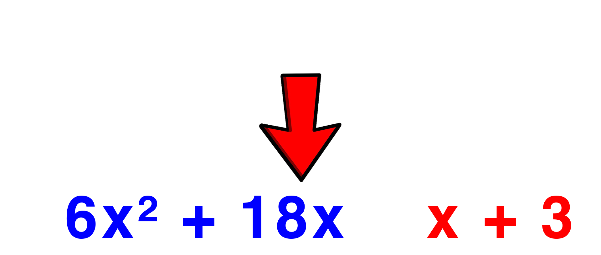

How To Factor Using Decomposition
By Stephen Jay
Decomposition: The method used for factoring Hard Trinomials.
Equation:
Example:
How To Solve:
The first step in factoring through Decomposition is to factor anything out before you start.
This is done by taking out the greatest common factor and putting it in brackets outside of the terms.
The second step in Decomposition is to find two numbers that multiply into a times c and add into b.
Once you have found these numbers, swap them for b in the equation.
The third step in Decomposition is to find two pairs of the four numbers that have the highest GCF together.
You can swap numbers around if necessary to find the best order.

After you have found these pairs, put them in brackets together and factor out the GCF of each pairing
if there is no GCF, place a 1 before the bracket.
You should notice the terms in brackets match eachother, if they are opposites factor out a negative on one of the brackets.
After the brackets match, create two pairs of brackets placing the common bracket as one of them
And for the second bracket add the first GCF and Second GCF together.
Finally, if there is anything able to be factored, factor it out.
After that, what remains is your final answer!